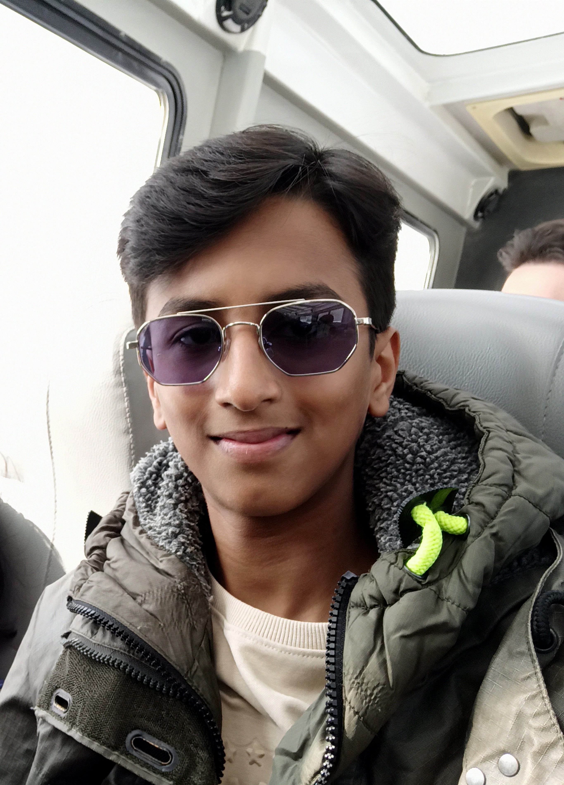

About Me
Hello! My name is Kshitij Tushar Meghawat. I am currently a grade 10 student at James Fowler High School taking the Computer Science 10 course. I love programming and constructing various games using python in computer science class. My favorite hobbies are ice skating and playing cricket with my dad. Additionally, I like solving new problems and drive to keep improving myself everyday.
Future CS Careers
Possible CS careers I would like to pursue in the future:

- Software Developer
- Artificial Intelligence Engineering
- Cybersecurity
- Data Analysis
- Systems Administration
How I will achieve my goals:
- Build strong skills by taking more CS courses throughout high school
- Gain practical experience through personal projects like this portfolio
- Learn multiple computing languages to explore different areas
- Get a Bachelor's Degree in Computer Science or a related field
- Practicing and focusing on in-demand sectors such as Artificial Intelligence
My Processing Projects
Python Turtle Project
This project uses Python’s turtle graphics library to draw a custom picture by combining shapes, colors, and reusable functions. It begins with a function that draws a square by looping through equal sides and angles a specific number of times. In addition to basic polygon, the program includes two specialized functions which loop a set pattern, creating detailed objects like the complex star or the orange shape that looks like a circle.
Number Guessing Game
This game works by having the computer choose a random number within a set range and then letting the user try to figure out what that number is through repeated guesses. After each guess, the program compares the user’s input to the hidden number and gives feedback—telling them to aim higher if their guess was too low or lower if it was too high. This loop continues until the correct number is found. At the end, the program awards points based on how many attempts the user needed, giving the highest score for guessing correctly right away and gradually reducing the score as the number of tries increases.
Pillbox Game
This game implements a simple projectile‑simulation in which a player repeatedly launches a virtual projectile toward a target using a chosen speed and angle. The game randomly positions the target, displays a basic visual field, and then uses simplified physics—breaking the launch velocity into horizontal and vertical components and updating position over small time steps under constant gravity—to animate the projectile’s path. After each shot, the program checks where the projectile lands relative to the target and reports how far the player missed, allowing them to adjust their next attempt. The process repeats until the projectile lands within an acceptable margin of error, at which point the game declares a successful hit and ends.